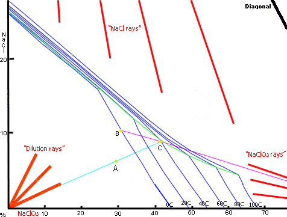
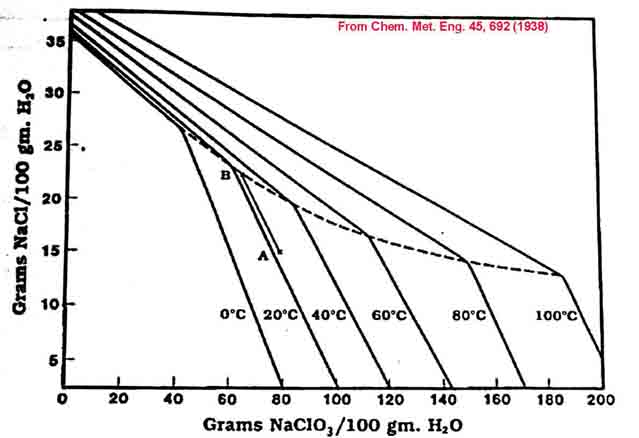
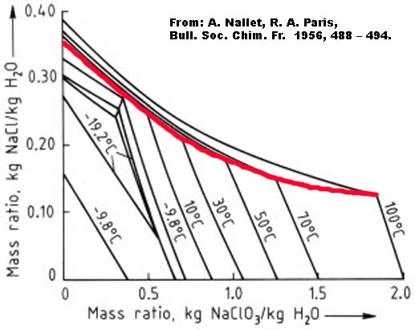

The diagram above is obtained from here using the original graph from EKA Chemicals.
An explanation of how to interpret mutual solubility diagrams is in How to use Mutual solubility diagrams.
Another useful document is in How to Design Fractional Crystallization Processes.
Also the book "Aqueous Solutions and the Phase Diagram" by FREDERICK FIELD PURDON and VICTOR WALLACE SLATER, is very useful reading. It is available from www.archive.org.
When you start off your cell for the first time you will be at 26% NaCl on the graph. If you do not add any Chloride solution as the cell is running and you run your cell for the recommended amount of time given by the run time formula, you will be left with about 10g/l00ml (100g/l) of Chloride in the cell and the rest of the Chloride (25g/100ml) will have been converted into 106.5/58.5 * 25g = 45.5g Chlorate per 100ml solution. This in approximately point A on the graph, 64.7% water, 6.3% NaCl and 29% NaClO3. As you can see you will not get any Chlorate out by cooling. If you boil off about 14.8% of the water you will get to point C on the graph. If you now cool your solution to Zero, you will get about 15.3% of the total weight of the evaporated cell contents of pure Chlorate to precipitate out. The 15.3% is calculated by the ratio of the length (any units you like) of the line B - C to the total length of the ray that goes from B to the 100% NaClO3 point. I make it 20/131 = 15.27%. If you go below zero (down to minus 12°C or so) you will get more Chlorate to come out.
The graph shown here has scales in %. This gives 'product rays' which come in at an angle (from 100%). Percent scales are the same as grams-solute(s)-per-100-grams-of-solution scales and also the same as Mass Fraction scales. If the graph had scales in grams solute (stuff dissolved) per 100 grams(ml) water (or parts product per 100 parts water or mass ratio [not the same as Mass Fraction!]), the mutual saturation lines would be spaced out more and the 'solute rays' would come in horizontal as the '100% solute points' would be at infinity. The 'dilution (evaporation) rays' would be the same as before.
If you add Sodium Chloride to the cell as it works you can increase the Chlorate concentration so that you will get a Chlorate ppt. when the cell is finished. Remember that if you do not take out the Chlorate this time around you will get out more the next time you harvest Chlorate after another cell run as the Chlorate concentration will be higher.
|
Another way to get Sodium Chlorate out of the solution it to add some concentrated NaCl to the solution. This is called 'salting out' in the industry. It will NOT suit the garage Amateur IMO. The solubility of the Chlorate decreases markedly as the Chloride concentration goes up. The NaCl will be used when you start running the cell again. Take a note of the amount of Chloride that you added. You can lower the temperature of your electrolyte to below Zero to get out a bigger crop of Chlorate . Salting out is described below using information from Encyclopedia of Chemical Processing and Design (see Google books). [BTW the line AB in the graph is much too slanted IMO and should be perpendicular]
The mutual solubility diagram below is in units of Grams of solutes per 100ml water.  The cell liquor from industrial reactors typically contain approximately 575 gpl Sodium Chlorate and 100 gpl Sodium Chloride @ 70 to 80C. These values, at a specific gravity of about 1.38 may be interpreted as 82g Sodium Chlorate per 100g water and 14.5g Sodium Chloride per 100g water (equal to 51.1% water, 7.2% Chloride & 41.7% Chlorate). This composition is shown by point A above. Sodium Chlorate will just begin to crystallize when the temperature goes to about 25C. If solid Sodium Chloride is added and dissolve, this moves the system to point B while crystallizing Sodium Chlorate. At point B no more Sodium Chloride will dissolve and further cooling will precipitate a mixture of Chlorate and Chloride.The more common practice is to evaporate off some water at 25C (using vacuum) which has the same effect of moving the system from A to B while crystallizing Sodium Chlorate. The table below gives amounts with numbers in grams.
| |||||||||||||||||||||||||||||||||||||||||
Another means to obtain solid Chlorate out of a cell that has approx. 100 grams per liter Chloride + approx. 500 grams per liter Chlorate is to evaporate off approx. half the volume at 100°C. Chloride will begin to precipitate (when water is evaporating and held at 100°C) because the Chloride's solubility does not change much with increased temperature but the Chlorate will stay in solution as it has a very high solubility at this high temperature. Decant the hot clear solution (or filter the solution hot) to remove solid Chloride and then let the liquid cool to about 20°C to get a crop of Sodium Chlorate. Working with hot solutions can be dangerous and inconvenient.
Note that Aluminium containers are not suitable for boiling the Chlorate solution in, as it will blacken the produce with corrosion products.
The solid Chlorate can be washed with very cold water and put into the Perchlorate cell.
When your chlorate cell is stopped running it will have a quantity of Hypochlorite (an intermediate product) in it. It is recommended that this hypochlorite be destroyed before going on to recover your solid Na Chlorate or make K Chlorate. This can be done by boiling your solution for about 15 minutes with the pH at neutral (you may have to do this anyways to concentrate the solution if you are separating out solid Sodium Chlorate) or by adding about 1g urea per litre of solution (boil). Hydrogen Peroxide will also destroy Hypochlorite as will Sodium Sulphite and Ammonia.
It is difficult to get rid of the Hypochlorite by boiling alone. I don't know what are the disadvantages of Hypochlorite in the Chlorate. It won't matter very much if you are going on to make Perchlorate as it will eventually all be destroyed in the Perchlorate cell.
The cell liquor (Mother liquor as it is called in industry) will now be returned to the Chlorate cell. Dry the extracted Chlorate and weigh, this will give you an idea of what quantity of Chloride and Chlorate are in the liquid.
It should be noted that Sodium Chlorate is very soluble and you may be disappointed with the yield of Sodium Chlorate that is obtained when you take product from your cells for the very first time.
There will be large amounts of Sodium Chlorate still dissolved in the mother liquor and when this is recycled into the cells you will get a much bigger yield of Sodium Chlorate in subsequent runs of the cell. If you have not been topping up your cells with Sodium Chloride when they were running for the very first time you will not be able to get any Chlorate to come out of solution by cooling alone, you will have to boil off some water in order to get Chlorate to ppt out. In subsequent extractions (assuming you recycled your mother liquor into the cells) the Sodium Chlorate concentration will be much higher and more will ppt out. You may still wish to boil off some water as described above.

I do not know how to remove Persulphates or Flourides from the electrolyte nor do I know what effect small amounts of Persulphates or Fluorides will have on pyrotechnic compositions.
Some Patents showing phase diagrams for Chlorate cells are, US 3511619, 3690845 and 3883406.
HIT THE BACK BUTTON ON YOUR WEB BROWSER
{kind=link}